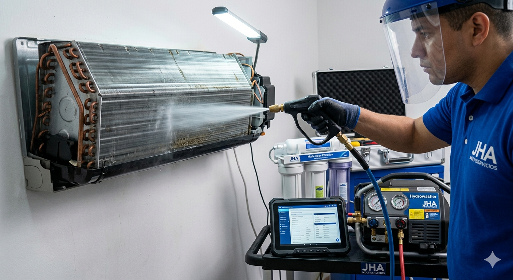
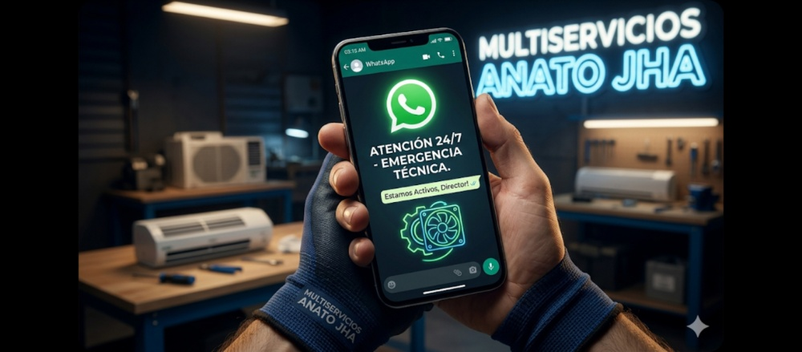
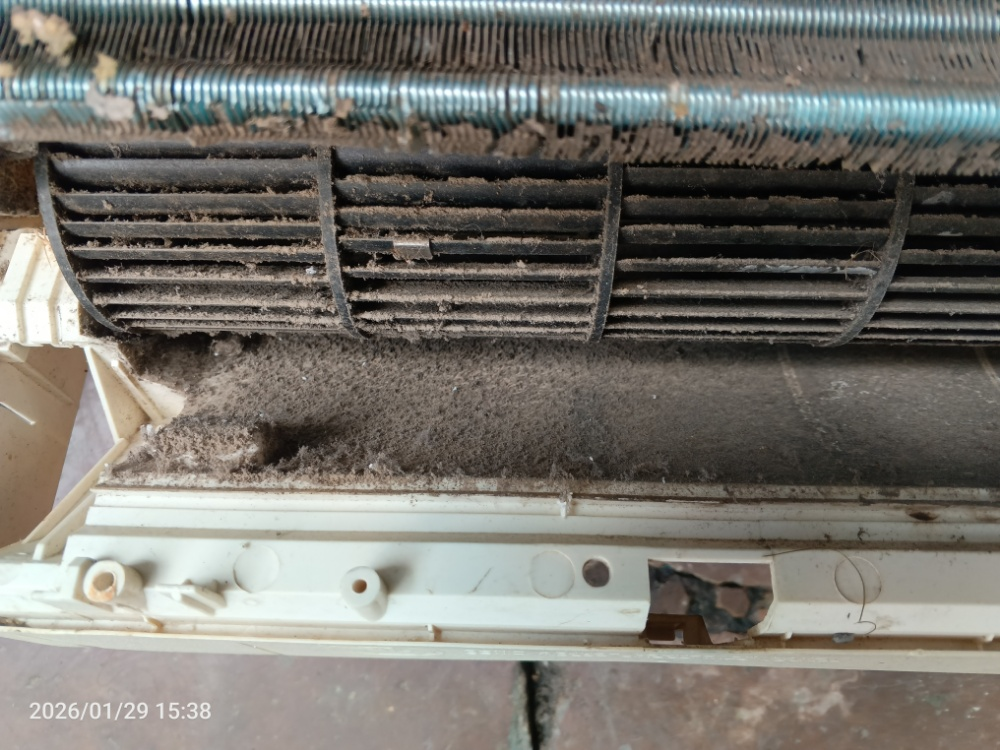
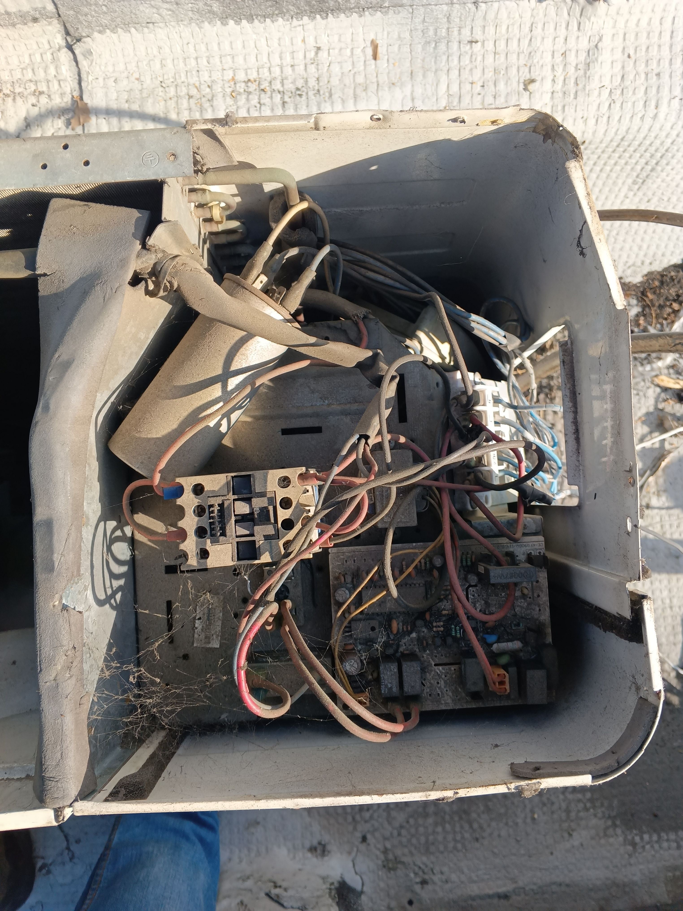

El mantenimiento preventivo optimiza el consumo eléctrico, extiende la vida útil de su equipo y garantiza un aire libre de bacterias para su familia.

Mantenimiento Preventivo ✅
Atención 24/7 ✅
Suciedad Extrema ❌
Cortocircuitos ❌